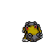
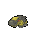

Pokédex / #450
Hippowdon #450
Ground
It is surprisingly quick to anger. It holds its mouth agape as a display of its strength.
Generation 4 · Sinnoh

Stats
| Attack | 112 | |
|---|---|---|
| Defense | 118 | |
| Sp. Atk | 68 | |
| Sp. Def | 72 |
In the wild
| Wild level | 40–50 |
|---|---|
| HP | 108 |
| Experience | 10 |
| Egg groups | Field |
Evolution
- Evolves from Hippopotas at level 35.
Moves
| Level | Move | Type | Category | Power | Energy | Cooldown | Effect | |
|---|---|---|---|---|---|---|---|---|
| 1 | Sand-Attack | Ground | Status | – | 25 | 10s | Sand-Attack lowers the target's Accuracy by one stage. | |
| 5 | Sand Tomb | Ground | Physical | 7 | 45 | 15s | Sand Tomb inflicts damage, hiting the target 5 times per use and lower the Speed of the target by two stages. | |
| 10 | Tackle | Normal | Physical | 15 | 15 | 1s | Tackle is one of the most common and basic moves a Pokemon learns. It deals damage with no additional effects. | |
| 15 | Bite | Dark | Physical | 60 | 60 | 9s | Bite deals damage and has a 30% chance of causing the target to flinch. | |
| 20 | Dig | Ground | Physical | 80 | 100 | 20s | Dig does damage and has no secondary effect. | |
| 25 | Crunch | Dark | Physical | 80 | 80 | 12s | Crunch deals damage and has a 20% chance of lowering the target's Defense by one stage. | |
| 30 | Take Down | Normal | Physical | 90 | 90 | 14s | Take Down deals damage and has no secondary effect. | |
| 40 | Fissure | Ground | Physical | 110 | 110 | 17s | Fissure deals damage and has no secondary effect. | |
| 45 | Bulldoze | Ground | Physical | 60 | 70 | 18s | The user strikes everything around it by stomping down on the ground. This lowers the Speed stat of those hit. | |
| 50 | Mud Bomb | Ground | Special | 65 | 80 | 10s | Mud Bomb deals damage and has a 30% chance of lowering the target's Accuracy by one stage. | |
| 55 | Rest | Psychic | Status | – | 100 | 180s | User sleeps for 5 seconds, but user is fully healed. | |
| 60 | Earth Power | Ground | Special | 9 | 100 | 21s | Earth Power deals damage and has a 10% chance of lowering the target's Special Defense by one stage. | |
| 65 | Earthquake | Ground | Physical | 50 | 110 | 23s | Earthquake deals damage. | |
| 70 | Double-Edge | Normal | Physical | 120 | 120 | 18s | Double-Edge deals damage and has no secondary effect. |
Field abilities
Rock SmashHeadbuttStrengthDig
Special abilities
Sand Stream
Egg moves
Body SlamCurseRevengeSand TombSleep TalkSpit UpStockpileSwallow
Technical machines
Double TeamEarthquakeFacadeHidden PowerHyper BeamIron TailProtectRestRoarRock SlideRock TombSandstormSecret PowerSubstituteToxicWater Pulse
Drops
| Item | Amount | Chance | |
|---|---|---|---|
| sandbag | 1 | 29.2% | |
| horn | 1 | 23.3% | |
| shadow rock | 1 | 12.5% | |
| cutting fang | 1 | 7% | |
| heavy stone | 1 | 7% | |
| rare sandbag | 1 | 5% | |
| clay lump | 1 | 5% | |
| grey-blue powder | 1 | 4.38% | |
| astral glyph | 1 | 3.5% | |
| plasmatic lightning | 1 | 3.5% | |
 | hippowdon doll | 1 | 0.1% |
| Earth Plate | 1 | 0.05% | |
| Mind Plate | 1 | 0.05% | |
| held soft sand | 1 | 0.01% | |
| held twisted spoon | 1 | 0.01% |